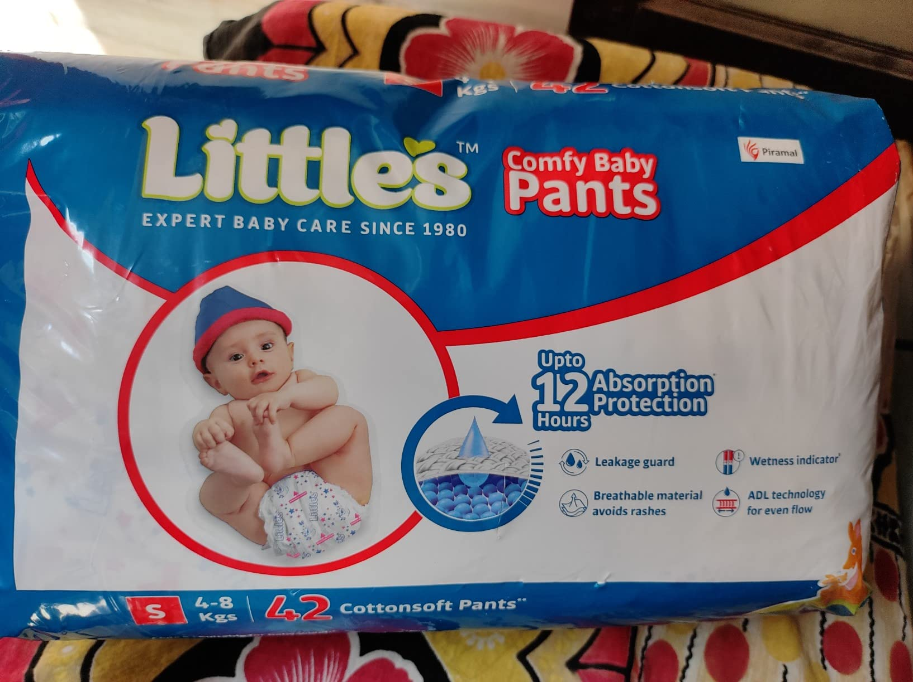

Little's New Born Baby Diaper Pants - Best Deals & Reviews
Price: ₹538
For latest discounts, please click on "Buy Now"
Disclaimer: This site contains affiliate links to products on Amazon, We earn from qualifying purchases to support our website and keep providing great content !
Why You Should Buy!
Little's New Born Baby Diaper Pants are designed to provide superior comfort and protection for your newborn. These diaper pants feature a soft, breathable material that keeps your baby's skin dry and rash-free. The elastic waistband ensures a snug fit, while the high-absorbency core locks in moisture, preventing leaks. Easy to put on and take off, Little's New Born Baby Diaper Pants are perfect for busy parents. Trust Little's to keep your baby comfortable and happy all day long.Rating: ★★★★☆ (3.9/5) - 76,889 ratings
Key Features
- Soft and Comfortable
- High Absorbency
- Leak-Proof Design
- Breathable Material
- Easy to Wear
- Hypoallergenic
How to USE
Using Little's New Born Baby Diaper Pants is simple and hassle-free:
- Ensure your hands are clean before handling the diaper pants.
- Lay your baby on a clean, flat surface.
- Slide the diaper pants under your baby, ensuring the waistband is at the baby's waist level.
- Pull up the diaper pants gently, making sure the leg cuffs are properly positioned around the baby's thighs to prevent leaks.
- Adjust the waistband for a snug fit, ensuring it is not too tight to avoid discomfort.
- Check the diaper pants frequently and change them as soon as they are soiled to maintain hygiene and prevent rashes.
- Dispose of used diaper pants in a sanitary manner.
Enjoy the convenience and comfort of Little's New Born Baby Diaper Pants for your newborn!
Buy Now Go BackWhat people think !
"Customers appreciate the softness and comfort of these diaper pants, noting that they are gentle on babies' skin and a great choice for parents. However, opinions vary on the quality, leakage prevention, and value for money. Some users praise the leakage guard, while others have experienced leaks. Feedback on absorbency, rash prevention, and sizing is mixed, with some finding the fit perfect and others feeling it's too small for their 10.3 kg baby."
Similar products
| Product | Image | Price | Rating | Buy Now |
|---|---|---|---|---|
| LuvLap Pant Style Baby Diapers |  |
₹419 | 4.0/5 (19,030) | Check |
| Baby Dreams Super Soft Diaper Pants |  |
₹499 | 3.8/5 (1,472) | Check |
| Rabbit New Born Premium Feather Diaper Pant |  |
₹697 | 4.2/5 (5,458) | Check |